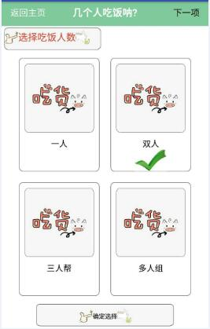

最近阿里刚刚开源的weex觉得很不错，因为类似vue的双向数据绑定、组件化让我能很快的上手，另外 weex 的特性使得我这种不会android、ios开发的人也能快速也出一个app。 但是因为是刚刚开发，所以肯定有很多地方是有问题的。但是这绝对拦不住我踩坑的热情，哈哈哈哈。。。
我在使用的weex 的版本是 0.6.3 ，在这个版本中还是有很多在web 页面支持的html、css 特性在weex 中是不支持的，比如我在想做一个app过程中用到一个类似单选的组件是没有的，所以我就想着自己实现一下。
首先对于weex技术来说，经常会遇见三个名词，而且经常容易混淆。首先是weex-toolkit，在Android代码中，无法直接加载.we文件的，但是可以加载.js文件的，所以我们需要把.we文件转换成.js文件，Weex给我们提供了一个工具weex-toolkit。这个是个帮助快速初始化项目、运行热部署的工具其中会有weex的代码，这里的weex-toolkit 的版本和weex的版本是不一样的。更新weex-toolkit 并不能更新weex 的版本，若是想要更新weex版本可以在android中更改配置文件重新编译运行。另一个是 weex-pack 这个是帮助快速初始化项目以及打包成apk的工具。
环境及运行
要使用weex 必须要先解决环境安装问题，这些阿里团队都做好了只要安装几个包就好了。
在 Node.js command prompt 下面
更新npm, cnpm cnpm install -g cnpm
安装 node-gyp cnpm install -g node-gyp
安装 weex-toolkit cnpm install -g weex-toolkit
前两步是用来更新环境，若是之后的weex-toolkit 出现问题，有可能是你当前的node、npm、node-gyp版本太低了，具体版本支持去看weex-toolkit就好啦。
在手机上 安装playground ,用来扫描之后生成的二维码。
在空文件夹下 创建自己的myRadio.we文件
在上步的文件目录下在命令行中 输入 weex myRadio.we 即可以启动 服务器及热部署在浏览器中。
想部署在手机上 启动weex myRadio.we –qr 然后会生成二维码 ，在手机上打开weex playground 扫描二维码就可以看到效果了。
若是扫描二维码出现’network error’可以按下面几步来查看问题：
最重要的是确保手机和电脑在同一个局域网中
最好关掉翻墙软件、关掉防火墙
若是有打开虚拟机最好也关掉，否则会造成ip 不一样
可尝试ping 手机ip 保证手机电脑是相互连通的
第二种快速运行的方式：
建立一个空文件夹 ，在空文件夹中运行 weex init
然后 npm install
运行 npm run serve
第三种快速运行的方式：
安装 cnpm install -g weexpack
weexpack init projectName
之后运行时 weexpac run android
实现单选组件
单选组件的实现
想要实现的组件的功能就是html 中单选的功能：一堆选项可以选其中的一个。 功能效果如下

一堆选项的 样式是相同的，所以就可以写成一个radio组件，然后在点击的时候能够知道 是点击了哪个就可以了。 在这个过程中会用到父子组件的通信。因为会将子组件的点击消息发送给父组件，因为会在父组件中使用点击的消息。 先看代码实现吧，一看其实就明白了。。。
1 2 3 4 5 6 7 8 9 10 11 12 13 14 15 16 17 18 19 20 21 22 23 24 25 26 27 28 29 30 31 32 33 34 35 36 37 38 39 40 41 42 43 44 45 46 47 48 49 50 51 52 53 54 55
| <template> <div class="container"> <image class="a" onclick="clickevent($event)" src="{{bgimg}}" index="{{index}}" flag="{{flag}}"> <text style="font-size:30;">{{text}}</text> <image class="icon-ok-flag" src="{{okSrc}}" if="{{flag}}"></image> <image class="icon-blank-flag" if="{{!flag}}"></image> </image> </div> </template> <style> .container{ font-family: Microsoft Yahei; border-width:1; border-radius:15; margin:20; } .a{ border-width:1; border-radius:15; width:250; height: 250; justify-content:center; align-items:center; margin: 20; } .icon-ok-flag{ width:120; height:80; } .icon-blank-flag{ width:120; height:80; } </style> <script> module.exports = { data: { bgimg:null, index:null, text:null, flag:false, okSrc:'http://d2.freep.cn/3tb_16122215573816yt581069.jpg' }, methods: { clickevent:function(e){ this._parent.$emit("notify",{ index:this.index }); } } } </script>
|
在上面中class 为a 的image 是个总的radio，可以为从父组件传过来的任意图片，text 为从父组件传过来的任意的文字 icon-ok-image 用来存放选中标志， icon-blank-flag 是个占位的标志。clickevent这个事件使用 this._parent.$emit与父组件进行通信，notify 是自定义的事件类型，后面index 对象是通信的具体细节用来表示具体点击了哪个radio。
单选组件的调用
父组件通过this.$on监听子组件的事件，并设置显示的标志flag 用来控制子组件的选中图片的显示。
1 2 3 4 5 6 7 8 9 10 11 12 13 14 15 16 17 18 19 20 21 22 23 24 25 26 27 28 29 30 31 32 33 34 35 36 37 38 39 40 41 42 43 44 45 46 47 48 49 50 51 52 53 54 55 56 57 58 59 60
| <template> <div class="container"> <div class="box"> <div repeat ="(index,val) in formyas" class="people"> <mya class="item" index="{{index}}" text="{{val.text}}" bgimg="{{val.bgimg}}" flag="{{val.flag}}" ><mya> </div> </div> </div> </template> <style> .box{ flex-direction:row; justify-content: center; align-items:center; flex-wrap:wrap; } .item{ justify-content: center; align-items:center; } </style> <script> module.exports = { data: { header: "选择吃饭人数", btntext:"确定选择", formyas: [ {bgimg:"http://bpic.588ku.com/element_origin_min_pic/16/06/09/1457590684eb27d.jpg", text:"一人", flag:true}, {bgimg: "http://bpic.588ku.com/element_origin_min_pic/16/06/09/1457590684eb27d.jpg", text:"双人", flag:false}, {bgimg: "http://bpic.588ku.com/element_origin_min_pic/16/06/09/1457590684eb27d.jpg", text:"三人帮", flag:false}, {bgimg: "http://bpic.588ku.com/element_origin_min_pic/16/06/09/1457590684eb27d.jpg", text:"多人组", flag:false} ], choosed:{ index:0 } }, created: function() { this.$on('notify', function(event) { var choosedIndex = event.detail.index; this.choosed.index =choosedIndex; for(var i=0,ii=this.formyas.length;i<ii;i++){ if(i===choosedIndex){ this.formyas[i].flag =true; }else{ this.formyas[i].flag =false; } } }) } } </script>
|
所以 由上面的过程就能明白写组件的过程啦。。。。